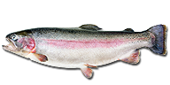

Fisket i Gäddvassen
Vår ambition är att erbjuda ett hållbart och roligt fiske för alla. Vi säkerställer detta genom kontinuerlig isättning av ädelfisk som i sin förlängning erbjuder möjligheten till riktigt storvuxna gäddor.
En av många fina fiskeplatser kring Gäddvassen
Fiskarter i sjön
Gädda
Gäddvassens Konung - Gäddan är en utpräglad rovfisk, och dess enda naturliga fiende är oftast andra större gäddor. En gädda kan sätta i sig en fisk som är upp till halva dess egen storlek. I stort sett äter gäddan mest mindre fiskar, men om tillfälle ges äter den även andra djur, t.ex. små fåglar, vattensorkar eller reptiler.
Läs mer om Gäddan hos iFiske.seÖring
Öringen, Salmo trutta, är älskad av de allra flesta fiskare. En vacker fisk i många skepnader som finns i många olika miljöer. I öringfamiljen ingår: Havsöring, Kustöring, Bäcköring, Insjööring och Strömöring. Till skillnad från släktingarna harren och rödingen är öringen lite av en ensamvarg, då den oftast inte går i stora stim.
Läs mer om Öringen hos iFiske.seRegnbåge
Regnbågen är ganska lik öring men har ett rödaktigt band längs sidorna och dessutom är dess fenor prickiga. Namnet härstammar delvis av att speciellt hannen skiftar färger vid lek.
Läs mer om Regnbågen hos iFiske.seAbborre
Abborren är en livfull och effektiv rovfisk som tar byten i alla storlekar. Mindre abborrar livnär sig på allt från mygglarver till fiskyngel. När den blir större övergår om möjligt till en fiskdiet. Om det är brist på föda, eller fiskyngel, kan abborrarna bli småvuxna och magra, det vi kallar för tusenbröder. De är tåliga fiskar, och en av de fiskarter i våra vatten som tål försurning bäst.
Läs mer om Abborren hos iFiske.seMört
Mörten är normalt sett en liten fisk som oftast inte blir mer än ca 20 cm lång, men den kan bli upp till 50 cm. Den väger vanligen inte mer än ett halvt kilo. Kroppen har en blåaktig silvertonad färg som övergår i vitt vid magen.
Läs mer om Mörten hos iFiske.se